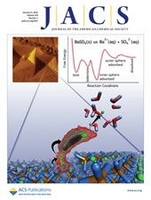
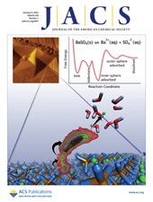

35. Ángel, A. Y. B.; Campos, P. R. O.; Alberto, E. E. “Selenonium Salt as a Catalyst for Nucleophilic Substitution Reactions in Water: Synthesis of Thiocyanites and Selenocyanates” Molecules 2023, 28, 3056. DOI 10.3390/molecules28073056
34. Ángel, A. Y. B.; Campos, P. R. O.; Alberto, E. E. “Synthetic Application of Chalcogenonium Salts: Beyond Sulfonium” Org. Biomol. Chem. 2023, 21, 223-236. DOI 10.1039/D2OB01822E
33. Martins, N. S.; Ángel, A. Y. B.; Anghinoni, J. M.; Lenardão, E. J.; Barcellos, T.; Alberto, E. E. “From Stoichiometric Reagents to Catalytic Partners: Selenonium Salts as Alkylating Agents for Nucleophilic Displacement Reactions in Water” Adv. Synth. Catal. 2022, 364, 87–93. DOI 10.1002/adsc.202100797
32. Hellwig, P. S.; Barcellos, A. M.; Furst, C. G.; Alberto, E. E.; Perin, G. “Oxyselenocyclization of 2-Allylphenols for the Synthesis of 2,3-Dihydrobenzofuran Selenides” ChemistrySelect 2021, 6, 13884-13889. DOI 10.1002/slct.202104072
31. Furst, C. G.; Cota, P. H. P.; dos Santos Wanderley, T.; Alberto, E. E. “Synthesis Of 2-Bromomethyl-2,3-Dihydrobenzofurans From 2-Allylphenols Enabled By Organocatalytic Activation of N-Bromosuccinimide” New J. Chem. 2020, 44, 15677-15684. DOI: 10.1039/D0NJ03432K
30. Ángel, A. Y. B.; Bragança, E. F.; Alberto, E. E. “Dichlorination of Alkenes Using 1,3-Dichloro-5,5-Dimethylhydantoin and ZnCl2“ ChemistrySelect 2019, 4, 11548-11552. DOI: 10.1002/slct.201902568
29. Sudati J. H.; Nogara P. A.; Saraiva R. A.; Wagner C.; Alberto, E. E.; Braga A. L.; Fachinetto R.; Piquini P. C.; Rocha, J. B. T. “Diselenoamino Acid Derivatives as GPx Mimic and as a Substrate of TrxR: in vitro and in Silico Studies” Org. Biom. Chem. 2018, 16, 3777-3787. DOI: 10.1039/C8OB00451J
28. Martins, N. S; Alberto, E. E. “Dibromination of Alkenes with LiBr and H2O2 Under Mild Conditions” New J. Chem. 2018, 42, 161–167. DOI: 10.1039/C7NJ04300G
27. Faria, A. C.; Wanderley, T. A. S.; Alberto, E. E.; Gusevskaya, E. V. “Palladium Catalyzed Aerobic Oxidation for the Incorporation of an Olfactory Group on Naturally Occurring b-Caryophyllene” Applied Catalysis A: General 2017, 548, 33–38. DOI: 10.1016/j.apcata.2017.07.042
26. Pimenta, L. S.; Gusevskaya, E. V.; Alberto, E. E. “Intermolecular Halogenation/Esterification of Alkenes with N-Halosuccinimide and Acetic Acid Catalyzed by 1,4-Diazabicyclo[2.2.2]octane” Adv. Synth. Catal. 2017, 359, 2297–2303. DOI: 10.1002/adsc.20170011
25. Gatley, C. M.; Muller , L. M.; Lang, M. A.; Alberto, E. E.; Detty, M. R. “Xerogel-Sequestered Silanated Organochalcogenide Catalysts for Bromination with Hydrogen Peroxide and Sodium Bromide“ Molecules 2015, 20, 9616-9639. DOI: 10.3390/molecules20069616
24. Alberto, E. E.; Muller, L. M.; Detty, M. R. “Rate Accelerations of Bromination Reactions with NaBr and H2O2 via the Addition of Catalytic Quantities of Diaryl Ditellurides” Organometallics 2014, 33, 5571-5581. DOI: 10.1021/om500883f
23. Alberto, E. E.; Braga, A. L.; Detty, M. R. “Imidazolium-containing Diselenides for Catalytic Oxidations with Hydrogen Peroxide and Sodium Bromide in Aqueous Solutions” Tetrahedron 2012, 68, 10476-10481. DOI: 10.1016/j.tet.2012.08.004
22. Seus, N.; Saraiva, M. T.; Alberto, E. E.; Savegnago, L.; Alves, D. “Selenium Compounds in Click Chemistry: Copper Catalyzed 1,3-dipolar Cycloaddition of Azidomethyl Arylselenides and Alkynes” Tetrahedron 2012, 68, 10419-10425. DOI: 10 1016/j.tet.2012.07.019
21. Soares, L. C.; Alberto, E. E.; Schwab, R. S.; Taube, P. S.; Nascimento, V.; Rodrigues, O. E. D.; Braga, A. L. “Ephedrine-Based Diselenide: A Promiscuous Catalyst Suitable to Mimic the Enzyme Glutathione Peroxidase (GPx) and to Promote Enantioselective C-C Coupling Reactions” Organic and Biomolecular Chemistry 2012, 10, 6595-6599. DOI: 10.1039/c2ob25539a
20. Nascimento, V.; Alberto, E. E.; Tondo, D. W.; Dambrowski, D.; Detty, M. R.; Nome, F.; Braga, A. L. “GPx-Like Activity of Selenides and Selenoxides: Experimental Evidence for the Involvement of Hydroxy Perhydroxy Selenane as the Active Species” Journal of the American Chemical Society 2012, 134, 138-141. DOI: 10.1021/ja209570y
19. Narayanaperumal, S.; Alberto, E. E.; Gul, K.; Kawasoko, C. Y.; Dornelles, L.; Rodrigues, O. E. D.; Braga, A. L. “Zn in Ionic Liquid: an Efficient Reaction Media for the Synthesis of Diorganyl Chalcogenides and Chalcogenoesters” Tetrahedron 2011, 67, 4723-4730. DOI: 10.1016/j.tet.2011.04.018
18. Schwab, R. S.; Singh, D.; Alberto, E. E.; Piquini, P.; Rodrigues, O. E. D.; Braga, A. L. “C–S Cross-Coupling of Thiols With Aryl Iodides Under Ligand-Free Conditions Using Nano Copper Oxide as a Recyclable Catalyst in Ionic Liquid” Catalysis Science & Technology 2011, 1, 569-573. DOI: 10.1039/c1cy00091h
17. Meinerz, D. F.; Sudati, J. H.; Santos, D. B.; Frediani, A.; Alberto, E. E.; Allebrandt, J.; Franco, J. L.; Barbosa, N. B. V.; Aschner, M.; Rocha, J. B. T. “Evaluation of the Biological Effects of (S)-Dimethyl 2-(3-(Phenyltellanyl) Propanamido) Succinate, a New Telluroamino Acid Derivative of Aspartic Acid” Archives of Toxicology 2011, 85, 43-49. DOI: 10.1007/s00204-010-0555-3
16. Alberto, E. E.; Rossato, L. L.; Alves, S. H.; Alves, D.; Braga, A. L. “Imidazolium Ionic Liquids Containing Selenium: Synthesis and Antimicrobial Activity” Organic and Biomolecular Chemistry 2011, 9, 1001-1003. DOI: 10.1039/c0ob01010c
15. Salman, S. M.; Schwab, R. S.; Alberto, E. E.; Vargas, J.; Dornelles, L.; Rodrigues, O. E. D.; Braga, A. L. “Efficient Ring Opening of Protected and Unprotected Aziridines Promoted by Stable Zinc Selenolate in Ionic Liquid” Synlett 2011, 69-72. DOI: 10.1055/s-0030-1259082
14. Alberto, E. E.; Nascimento, V.; Braga, A. L. “Catalytic Application of Selenium and Tellurium Compounds as Glutathione Peroxidase Enzyme Mimetics” Journal of the Brazilian Chemical Society 2010, 21, 2032-2041. DOI
13. Tabarelli, G.; Alberto, E. E.; Deobald, A. M.; Marin, G.; Rodrigues, O. E. D.; Dornelles, L.; Braga, A. L. “Ionic Liquid: an Efficient and Reusable Media for Seleno- and Thioester Synthesis Promoted by Indium” Tetrahedron Letters 2010, 51, 5728-5731. DOI: 10.1016/j.tetlet.2010.08.076
12. Godoi, M.; Alberto, E. E.; Paixão, M, W.; Soares, L. A.; Schneider, P. H.; Braga, A. L. “New Class of Amino-Phosphinite Chiral Catalysts for the Highly Enantioselective Addition of Arylzinc Reagents to Aldehydes” Tetrahedron 2010, 66, 1341-1345. DOI: 10.1016/j.tet.2009.12.009
11. Narayanaperumal, S.; Alberto, E. E.; Gul, K.; Rodrigues, O. E. D.; Braga, A. L. “Synthesis of Diorganyl Selenides Mediated by Zinc in Ionic Liquid” Journal of Organic Chemistry 2010, 75, 3886-3889. DOI: 10.1021/jo100454m
10. Singh, D.; Alberto, E. E.; Rodrigues, O. E. D.; Braga, A. L. “Eco-friendly Cross-Coupling of Diaryl Diselenides With Aryl and Alkyl Bromides Catalyzed by CuO Nanopowder in Ionic Liquid” Green Chemistry 2009, 11, 1521-1524. DOI: 10.1039/b916266f
9. Alberto, E. E.; Soares, L. C.; Sudati, J. H.; Borges, A. C. A.; Rocha, J. B. T.; Braga, A. L. “Efficient Synthesis of Modular Amino Acid Derivatives Containing Selenium with Pronounced GPx-Like Activity” European Journal of Organic Chemistry 2009, 4211-4214. DOI: 10.1002/ejoc.200900485
8. Narayanaperumal, S.; Alberto, E. E.; Andrade, F. M.; Lenardão, E. J.; Taube, P. S.; Braga, A. L. “Ionic Liquid: an Efficient and Recyclable Medium for Synthesis of Unsymmetrical Diorganyl Selenides Promoted by InI” Organic and Biomolecular Chemistry 2009, 7, 4647-4650. DOI: 10.1039/b910699e
7. Braga, A. L.; Schwab, R. S.; Alberto, E. E.; Salman, S. M.; Vargas, J.; Azeredo, J. B. “Ring Opening of Unprotected Aziridines by Zinc Selenolates in a Biphasic System” Tetrahedron Letters 2009, 50, 2309-2311. DOI: 10.1016/j.tetlet.2009.02.156
6. Braga, A. L.; Alberto, E. E.; Soares, L. C.; Rocha, J. B. T.; Sudati, J. H.; Roos, D. H. “Synthesis of Telluroamino Acid Derivatives With Remarkable GPx Like Activity” Organic and Biomolecular Chemistry 2009, 7, 43-45. DOI: 10.1039/b814990a
5. Sculaccio, S.; Rodrigues, E.; Cordeiro, A.; Magalhaes, A.; Braga, A.; Thiemann, O.; Alberto, E. E. “Selenocysteine Incorporation in Kinetoplastid: Selenophosphate Synthetase (SELD) From Leishmania Major and Trypanosoma Brucei” Molecular and Biochemical Parasitology 2008, 162, 165-171. DOI: 10.1016/j.molbiopara.2008.08.009
4. Braga, A. L.; Lüdtke, D. S.; Alberto, E. E. “Chalcogen-Containing Oxazolines in the Palladium-Catalyzed Asymmetric Allylic Alkylation” Journal of the Brazilian Chemical Society 2006, 17, 11-15. DOI
3. Braga, A. L.; Lüdtke, D. S.; Sehnem, J.; Alberto, E. E. “Modular Chiral Selenium-Containing Oxazolines: Synthesis and Application in the Palladium-Catalyzed Asymmetric Allylic Alkylation” Tetrahedron 2005, 61, 11664-11671. DOI: 10.1016/j.tet.2005.09.044
2. Braga, A. L.; Lüdtke, D. S.; Paixão, M. W.; Alberto, E. E.; Stefani, H. A.; Juliano, L. “Straightforward Synthesis of Non-Natural Selenium Containing Amino Acid Derivatives and Peptides” European Journal of Organic Chemistry 2005, 4260-4264. DOI: 10.1002/ejoc.200500530
1. Braga, A. L.; Severo Filho, W. A.; Lüdtke, D. S.; Dornelles, L.; Alberto, E. E.; Corbelline, V. A.; Rosa, D. M.; Schwab, R. S. “’One-pot' Synthesis of Chiral N-Protected α-Amino Acid-Derived 1,2,4-Oxadiazoles” Synthesis 2004, 1589-1594. DOI